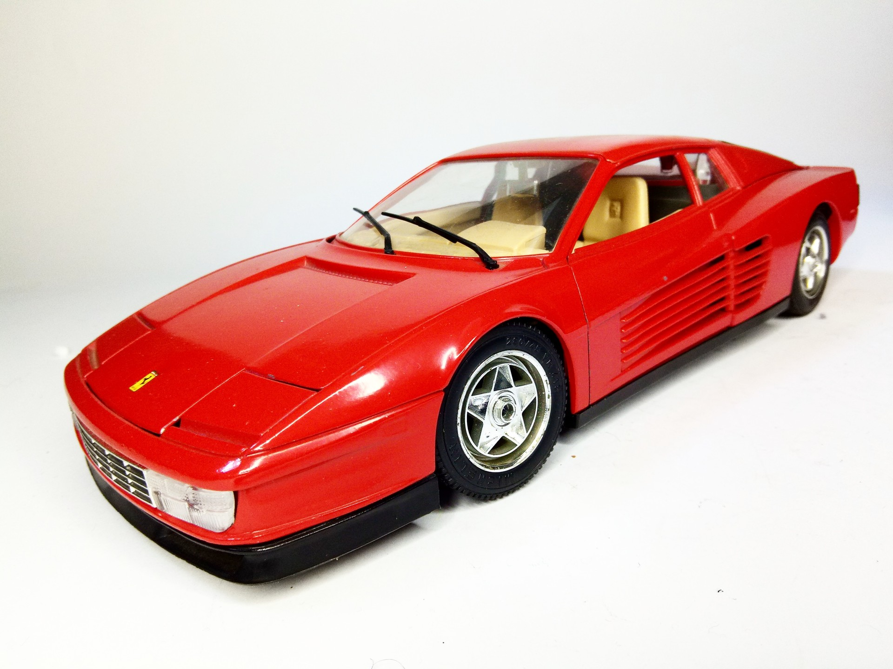
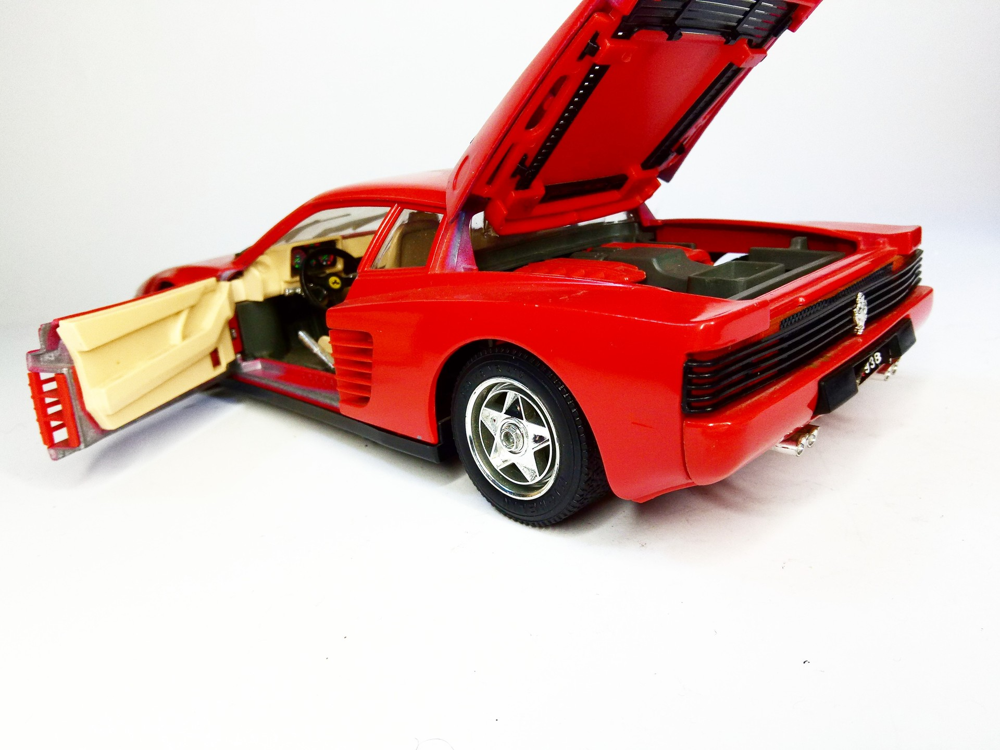

Auto e veicoli stradali · scale model archive
Ferrari Testarossa
Ferrari Testarossa — Scale: 1/18. Kit Burago Metal kit #1/18 #Burago #Ferrari #Testarossa

Photo gallery

English description
Kit Burago
Metal kit
#1/18 #Burago #Ferrari #Testarossa
Descrizione italiana
Kit in metallo.